お願い絵馬〜飛来神社、吉塚地蔵、旭地蔵/福岡県福岡市
福岡には不思議な絵馬がある。
それは人が手を合わせて拝んでいる光景を描写した絵馬だ。
・・・そんなのどこにでもあるじゃんかよお！と仰るなかれ。
確かに善男善女が神仏に手を合わせている参拝絵馬や参詣図は日本全国のお寺や神社に奉納されている。
しかしここ福岡市内にあるのは参拝者の絵が各年代別に分かれている絵馬があるのだ。
具体的にいえば乳児、幼児、子供、学生、大人、シニアとそれぞれの年代別の絵馬、しかもそれぞれ男女のものを揃えるという充実のラインナップなのだ。
この年齢別奉納絵馬を特定する呼称が判らないので、とりあえず「お願い絵馬」と呼ばせてもらう。
このお願い絵馬、最大のチャームポイントは後程たっぷり御覧いただくが、そのハイパーポンチっぷりである。
白目率０パーセントの真っ黒な目、顔の輪郭からも飛び出している濃い眉、微妙にレトロなファッション。
そんな脱力感に満ち満ちた絵馬が並ぶ様は見ているこちらのチカラをすーっと抜いてくれるような何ともいえない平和な気分にさせてくれる。
そんな絵馬を求めて福岡市内をうろうろしてみた。
例によって本来の目的を大きく逸脱する事も多々あるが、まあ、いつもの事ですから御容赦くださいな。
飛来神社
お願い絵馬巡りは博多区吉塚の飛来神社からスタートする。
ここは手形足形を奉納する習俗が見られる・・・はずだった。
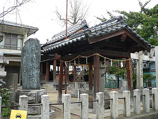
見た目普通の神社のようだが、手形足形は何処？
…神社の方に聞いてみたら祭礼の時だけしか奉納されないそうな。残念。
それでも本殿の端の方にひとつづつ手形と足形が落ちてました。
忘れ去られたかのような手形足形、願いは神様に届いたのだろうか？
この神社は大己貴命、少彦名命の二神を祭るといわれる。
少彦名命は手足が不自由だといわれ、それで手足の病の治癒を祈願手型足型を奉納したのだという。
「お飛来さま」と呼ばれ地元の人の信仰も篤いようで、かつては御神体の神像を近所のチビッコ達が浮輪代わりに川に投げ込んで遊んだ、という豪快な伝説も。
そんな飛来神社の拝殿には源平合戦の絵額など様々な奉納絵馬が掲げられていた。
その中でも注目はこちらの十二支をあしらったモノ。用途は不明だがかっこいいぞ。
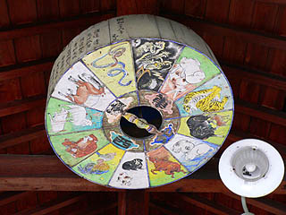
そんなこんなでお願い絵馬を発見。
年配の女性とスーツ姿の男性、そして妙に色っぽい着物の女性の絵馬。皆さん大願成就を祈っております。
お願い絵馬は本来、奉納する人の姿を描くものだ。
しかし奉納者がいちいち自分の姿を描いて奉納するのも面倒なので事前に絵師が描いた絵馬が用意される。
そのフォーマット済みの絵馬の中でもこれらの絵馬は現在出回ってないタイプのもののようだ。
もしかしたら1点モノなのかもしれない。
神妙に拝んでいる姿が印象的だった。
吉塚地蔵
JR吉塚駅近くの吉塚地蔵は庶民的な商店街の入口に位置しており、いかにも庶民に信仰されているといった風情である。
小さな地蔵堂だが裏に回るとお願い絵馬がびっしりと奉納されている。
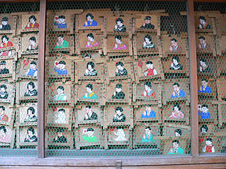
各世代の男女が一斉に祈願する姿を見ると、奉納者の気持ちも判らないでもないが、どっちかというとそれを聞き入れるお地蔵さんの苦労について思いを馳せてしまう。
絵馬は旗や風船を持った乳幼児、学生、大人に分別できる。
大人の場合男性はスーツ姿か紋付で、女性は着物の柄や顔付きで微妙に年令が別れている。
これは奉納者自身がチョイスするのではなくて、申し込み用紙に誕生日と性別を書いて提出すると地蔵堂の管理サイドの方がそれに合わせて絵馬を見繕ってくれるそうだ。
従ってどんなに凶悪なルックスの方だろうが超イケてる方だろうが下のペーソス溢れる絵馬に描かれている黒目の人達にトランスフォームされてしまうのだ。
以下、あの家族になぞらえて紹介しましょう。
|
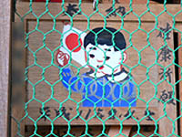
|
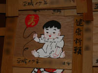
|
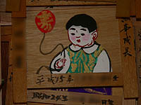
|
|
太良ちゃん
|
幾羅ちゃん
|
太良ちゃんレプリカントでちゅ〜
|
|
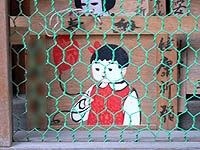
|
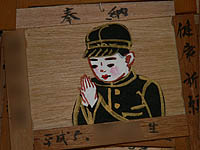
|
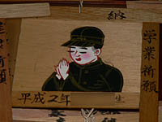
|
|
リカちゃん（わかるかなあ？）
|
喝男
|
奈加痔魔君
|
|
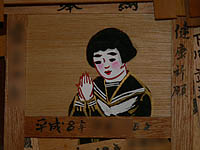
|
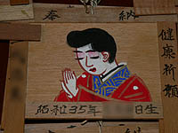
|
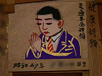
|
|
若芽ちゃん
|
栄螺さん
|
魔酢男さん
|
|
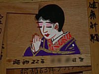
|
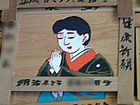
|
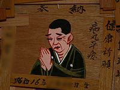
|
|
泰子さん
|
不寝
|
名味塀
|
衣類のシワを金色のラインで表現するあたりに並々ならぬ絵心を感じちゃったりします。
特に魔酢男さんの紫のスーツに金ラインはあまりにもカッコ良すぎますね。
いたいけな女子学生が一生懸命祈っている姿などは印象的だが、実際には汚ギャルが「カレとヤレますように〜」とか言ってたりするんだろうか。
い、いや。そんな事はない（はず）！
旭地蔵尊
福岡県庁からも程近い崇福寺。
福岡城から移築したという山門が御自慢の福岡藩主黒田家の菩提寺であり、市内有数の名刹である。
しかしここを訪れる人達はみな山門を潜っても正面の崇福寺には向かわない。
実は今日（4月4日）は境内の左手の一画にある旭地蔵尊の縁日なのだ。
境内の一画とはいってもそのエリアはかなり広い。
旭地蔵尊だけで普通のお寺以上の広さはある。
縁日という事もあって地蔵堂の中にはかなりの人が集まっていて線香の煙で先も良く見えない状態だ。
旧藩主の菩提寺というお堅いイメージの寺に対して強烈なコントラストを放つ福岡民間信仰の牙城。
そんな地蔵堂の隅っこに…ありました！お願い絵馬！
ここのお願い絵馬も先程の吉塚地蔵と同じタイプのもの。黒目がちな皆さんがお願いしております。
ちなみにお願い絵馬には奉納者の誕生日と「健康祈願」「大願成就」といった程度のインフォメーションしか記されていない。
何を望んでいるのかとか具体的な事は一切書かれていない。まあ、奉納者が心に留めておけば良い事ですからあえて記す必要もないのだが。
で、記す必要もないのだが、ばっちり記してあるのがこちら↓。お願い絵馬の近くに貼ってあった祈願書。
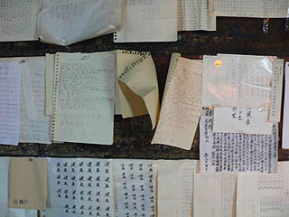
インフォメーションを隠すお願い絵馬と全部記す祈願書、あまりにも対照的な２つの祈願グッズが並列している。さすが民間信仰の牙城である。
「癌治癒」と連続して書かれた祈願書。癌も大変ですが腱鞘炎になりそうでチョット心配です。
「肺」と書かれた祈願書の裏には同じ筆跡で「肝臓」と書かれていた。
みっちりと書き込まれた祈願を見ていると何だか吸い込まれていくような気がしてならない。
地蔵堂の周囲には塀に沿ってたくさんのお地蔵さんが置かれている。
尋常じゃない程の数の石像が並んでいて、こちらにも大勢の人達が参拝に訪れている。
丁度L字型にズラリと並んだ石像にはトタンの屋根が架けられていて、一見、禅寺の回廊みたい。
側溝のような香炉（実際にコンクリートの側溝を使用しているようだ）が遥か彼方まで一直線に延びており、その前には幾つもの横長の賽銭箱が並ぶ。
これだけ数が多いと一個一個香炉を置くことも出来ず、このような塩梅になってしまったのだろうが流しそうめんみたいで面白い。
参拝者は自分のお好みの（？）石像の所に行って線香を手向け賽銭をあげ参拝するのだろう。
大小様々な石像があるが、古いものも新しいものも混ざっており、この地蔵尊の歴史を感じさせる。
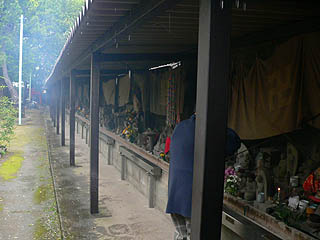
石像はお地蔵さんが大半だが、そこは民間信仰の牙城、人々の様々な解釈により多種多様な石仏が奉納されている。
中には観光地の土産物屋で買ってきたかのような仏像もあったりして。
不動明王、弘法大師も人気アイテムだ。
石像群に次から次へと参拝客がお参りに来ていた。
真剣に拝むその姿を見ているとお願い絵馬の絵柄がオーバーラップしてくる。
一見ポンチな絵柄だが、その裏側にはとてつもなくヘヴィ−な願いが込められているのだろうか。
そう考えると単なる面白い絵柄の絵馬というだけでは語り尽くせないストーリーが見え隠れしてくるような気がした。
そんな複雑な思いを胸に雨降る地蔵尊を後にしたのであった。
で、
門前の売店でお願い絵馬を発見！
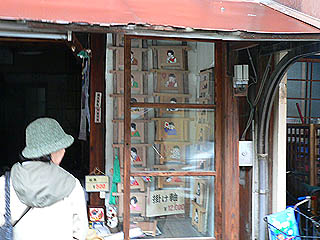
是非購入したかったのだが私の場合、あのスーツのおっさんの絵馬なんだろうなあ〜、う〜む。微妙…
2006.4.
珍寺大道場 HOME